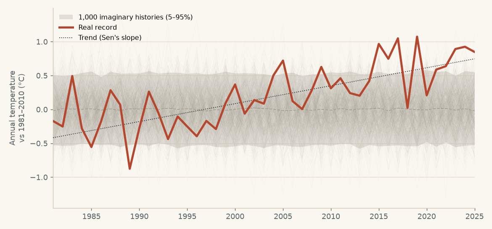
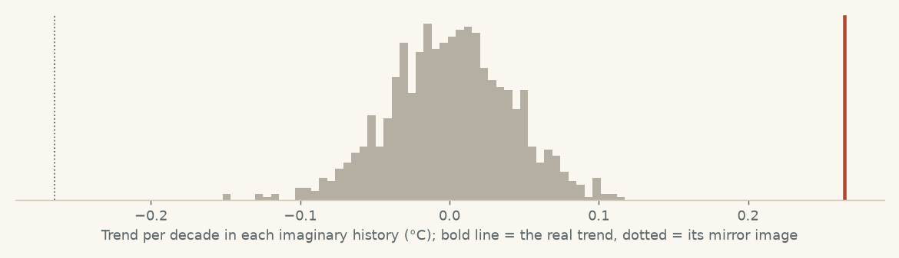
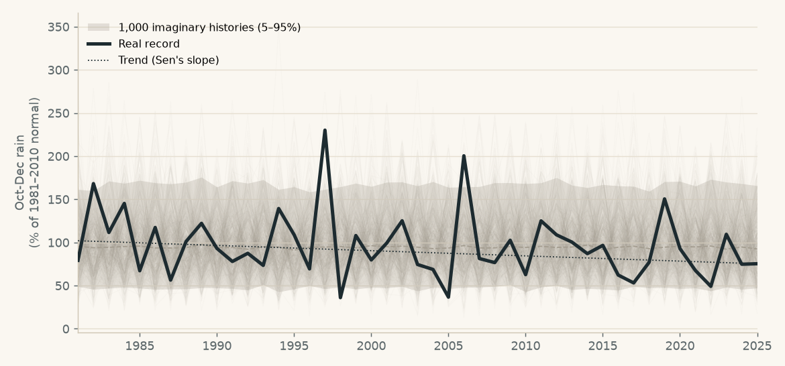
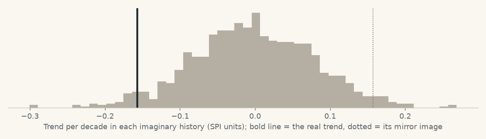

1.29°S, 36.82°E · judged on Annual temperature
Nairobi, Kenya
East African highland capital; two rainy seasons a year, including the Oct-Dec short rains.
Natural variation has no alibi
Annual temperature is rising: +0.26 °C per decade since 1981. The real trend is bigger than the trend in 1,000 of 1,000 imaginary histories made of natural variation alone (p < 0.001).


- Trend (Sen's slope)
- +0.26 °C per decade
- Size of the change
- +1.16 °C over 1981–2025 along the trend line
- Last 10 years vs first 20
- +0.84 °C
- Normal
- 19.7 °C average annual temperature, 1981–2010
- Imaginary histories (default)
- AR(1), lag-1 correlation 0.05, seed 414910
- Robustness: ARMA(0,0) chosen by AIC
- p < 0.001 · outside 1,000
- Robustness: IAAFT surrogates
- p < 0.001 · outside 1,000
- Data used
- 45 seasons, months up to 2026-09
Re-run this live, or change the season →
Share card (PNG) · All numbers (JSON)

Oct-Dec precipitation
Not yet distinguishable from natural variation
Oct-Dec precipitation has a trend of −6.1 percentage points of normal rain per decade since 1981 (pointing drier), but natural variation alone can produce a trend that size. The real trend is bigger than the trend in 942 of 1,000 imaginary histories made of natural variation alone (p = 0.059).


- Trend (Sen's slope)
- −6.1 percentage points of normal rain per decade
- Size of the change
- -26.6 percentage points of normal over 1981–2025 along the trend line
- Last 10 years vs first 20
- -22 points of normal
- Normal
- 212 mm in a normal Oct-Dec, 1981–2010
- Imaginary histories (default)
- AR(1), lag-1 correlation -0.37, seed 77292
- Robustness: ARMA(1,1) chosen by AIC
- p < 0.001 · outside 1,000
- Robustness: IAAFT surrogates
- p = 0.002 · outside 999
- Data used
- 45 seasons, months up to 2026-09
Your place vs the planet
Here, annual temperature has changed by +0.26 °C/decade since 1981 (NASA POWER). Over the same years the whole planet warmed by +0.21 °C/decade and the 0-24°S latitude band by +0.14 °C/decade (NASA GISTEMP v4, annual means, 1981–2025). In 2025 the planet was +1.19 °C warmer than its 1951–1980 average.
GISTEMP blends land and ocean and covers whole years; POWER covers one point and one season, so the numbers are context, not a like-for-like comparison.
Would it have warned? Backtests on real events
We rerun the whole trial using only the data that existed before each event: the record is cut at the end of the year before (or before the season starts, whichever is earlier), and the baseline, the fitted noise and the 1,000 histories are all rebuilt from that shorter record. Nothing after the cut-off is used.
2020-2023 Horn of Africa drought (failed Oct-Dec 2021 rains) (Oct-Dec rain, 2021) · source
Would the signal have warned? No. Before the event the Oct-Dec record was not yet distinguishable from natural variation (the trend pointed drier, p = 0.166).
Using data up to 2020-12 (40 seasons): Not yet distinguishable from natural variation · trend −5.0% of normal/decade · outside 835 of 1,000 histories.
What happened: 68% of normal rain (143 mm, SPI -0.8), number 8 of 41 by that measure; drier than 79% of the years in 1,000 natural histories built only from the data before it. It shows as unusual, though not extreme, in this dataset.
Our seasonal forecast method, run with the same data, would have said:
Climatology says 33% each. It gave 43% to below normal.
Forecast track record
Before a season starts we publish the chance that it will be below, near or above normal (the middle third of 1981–2010). Each forecast is a file committed to the public repository; the commit time and the file's SHA-256 fingerprint prove it was not changed after the fact. When the season's data arrive we score it, misses included.
| Season | What | Chances | Result |
|---|---|---|---|
| DJF 2027 Dec-Feb | temperature normal: 19.8–20.4 °C | Waiting for the season's data | |
| DJF 2027 Dec-Feb | rain normal: 111.8–174.0 mm | Waiting for the season's data | |
Locked in commit 38e204dc10 at 2026-11-16T01:22:58+05:30 · file unchanged since then ✓Issued 2026-11-15T19:48:15Z with data to 2026-09 · forecast file · SHA-256 58844e991f3457b74141f6469b88827d9d5020a02076f0251fb147b36116b109 | |||
Check a fingerprint yourself: download the file and run sha256sum (Linux/macOS) or certutil -hashfile FILE SHA256 (Windows).
Track record: the last 10 Dec-Feb seasons
The same temperature forecast method, re-run for each past season using only the data from before it (hindcasts, not locked). Its most likely category came true in 9 of 10; skill vs always saying 33/33/33: +80%.
| Season | Forecast | What happened | Most likely right? |
|---|---|---|---|
| DJF 2017 | above (21.3 °C) | ✓ | |
| DJF 2018 | above (21.7 °C) | ✓ | |
| DJF 2019 | above (21.1 °C) | ✓ | |
| DJF 2020 | near (20.2 °C) | ✗ | |
| DJF 2021 | above (20.5 °C) | ✓ | |
| DJF 2022 | above (20.5 °C) | ✓ | |
| DJF 2023 | above (21.1 °C) | ✓ | |
| DJF 2024 | above (20.7 °C) | ✓ | |
| DJF 2025 | above (21.3 °C) | ✓ | |
| DJF 2026 | above (21.2 °C) | ✓ |
How the method did on past seasons (hindcasts)
Each past season was forecast using only data from before it. These are not locked forecasts, so they estimate skill but prove nothing about honesty. Skill score: 1 = perfect, 0 = no better than always saying 33/33/33, below 0 = worse.
| Series | Seasons | Skill (RPSS) | Most likely category right | Verdict |
|---|---|---|---|---|
| Annual temperature | 1996–2025 (30 seasons) | +0.59 | 83% | better than climatology |
| Oct-Dec rain | 1996–2025 (30 seasons) | -0.04 | 47% | worse than climatology |
Sources
- NASA POWER monthly point data for this place: API request (T2M, PRECTOTCORR; −999 treated as missing). Raw response cached in the repository.
- NASA GISTEMP v4 global and zonal annual means (1951–1980 base).
- Event sources are linked in each backtest above.
What this does not show: a signal means the change is bigger than natural variation can explain. It does not, on its own, prove the cause. See limitations.